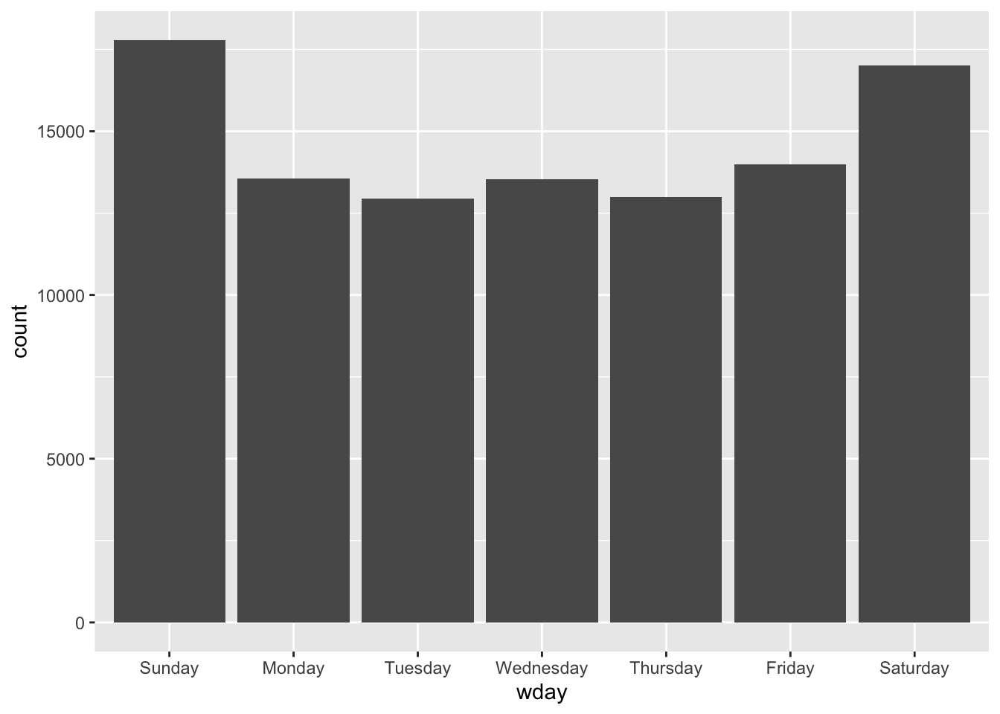

Chapter 7 Time matters
7.1 Introduction
In this chapter we provide a brief introduction into spatio-temporal visualisation. The importance of place in criminology and crime analysis is widely recognised, and is the central topic of this book. However, taking into consideration time is just as important as place. We often hear that crime is “going up” or “going down” over time. These variations on the levels of crime along time also vary across space. These variations across both time and place are called spatio-temporal variations, and are of crucial importance for crime analysis, explanation, and prevention.
Traditionally the temporal and spatial analysis of crime are not introduced in a combined manner. Although a great deal of energy has been devoted to produce accessible training material for crime analysts on geographic information systems and spatial analysis, most criminology degrees (even at postgraduate level) and training packages for crime analysis devote a very limited (if any) content to the appropriate visualisation and analysis of temporal and spatio-temporal data. Therefore, before we discuss the spatio-temporal, we have to introduce a few key ideas and concepts about temporal crime analysis.
In this chapter, we will therefore give a very high-level overview of temporal crime analysis, before moving on to ways in which we can display spatio-temporal variation in our data using maps. The key concepts covered in this chapter are:
- an introduction to temporal data in crime analysis,
- cleaning and wrangling temporal data,
- visualising time data,
- time series and its three components: trend, seasonality, and random variation,
- visualising spatio-temporal variation.
We will be making use of the following R packages:
# Basic reading and data carpentry
library(readr)
library(dplyr)
library(lubridate) # adds functionality for better handling of temporal data
# Packages for handling spatial data
library(sf)
library(spacetime)
library(sp)
# General visualisation and ggplot plugins for temporal data
library(ggplot2)
library(ggfortify)
library(ggTimeSeries)
library(ggseas)
library(gganimate)
library(tmap)7.2 Temporal data in crime analysis
In this book so far we have really emphasised the role of place in presenting opportunities for crimes to occur. However we cannot consider space without also considering time. An area might look very different during the day and during the night, on a weekend or on a weekday, and in the summer or in the winter.
On a macro-scale, the relationship between crime and the seasons is something that had been a topic of concern for researchers as long as space has (Baumer and Wright 1996). Zooming into a micro-scale, changes in routine activities with time of day or day of week will affect the profile of a place, and linking back to the idea of crime places such as generators or attractors, will have significant effect on crime rates. In conceptualising these crime places, Newton (2018) emphasised the importance to consider the measure of busyness of a place by time of day in order to understand its role as an attractor, generator, or other crime place. For example, at transit stations during school days there is a morning peak time of work and school users combined, an afternoon school closing peak, and a secondary and slightly later end-of-workday peak time. Any calculation of crime rates needs to account for these micro-level temporal variations.
At whatever unit of analysis, time is a vital variable to include in our crime analysis and criminological research. To quote Tompson and Bowers (2013):
“[I]t is important to disaggregate data into sensible temporal categories to have a real understanding of the relationship between the variables under scrutiny” (p.627).
Returning to the importance of the role of place, we can introduce spatio-temporal data analysis. Spatio-temporal analysis is the process of utilising geo-and-time-referenced data in order to extract meaning and patterns from our data. In the earlier days, crime pattern analysis has tended to focus on identifying areas with higher densities of criminal activity, but not so much the monitoring of change in crime patterns over time (Ratcliffe and McCullagh 1998). However, crime hotspots display significant spatio-temporal variance, and the identification of spatio-temporal patterns of hot streets provides significant ‘actionable intelligence’ for police departments (Herrmann 2013). Evidently, we cannot ignore time as a variable in our analyses. And while the main focus of this book is space, we must take at least one chapter to introduce some key concepts, and provide additional resources for readers to follow up with.
7.3 Temporal data wrangling
Temporal data means that we can perform all sorts of exciting operations in our data wrangling processes. Just how we learned about spatial operations with spatial data, there are some things we can do only with temporal data. In this section we will introduce some of these.
A key R package that will help with temporal data wrangling is lubridate. Date-time data can be frustrating to work with and many base R commands for date-times can be unintuitive. The package lubridate was created to address such issues, and make it easier to do the things R does with date-times.
For crime data, we will be using crime data from New York City made available by the R package crimedata Ashby (2019). You can refer to these citations to learn more about acquiring data from this fantastic resource! However for now, let’s make use of the data provided with the book, where we selected a specific subset of aggravated assault in New York for a period of five years.
agassault_ny<-read_csv("data/agassault.csv")When you read the data into R, you will see that there is a column for date called date_single. Let’s have a look at the first value in this column:
agassault_ny %>% dplyr::select(date_single) %>% head(1)## # A tibble: 1 x 1
## date_single
## <dttm>
## 1 2014-01-01 00:03:00We can see that the date is stored in the following format: year-month-day hour-minute-second. So the first date on there you can see is 2014-01-01 00:03:00. What kind of variable is this?
class(agassault_ny$date_single)## [1] "POSIXct" "POSIXt"Our date and time variables are of class POSIXct and POSIXt. These are the two basic classes of date/times. Class “POSIXct” represents the (signed) number of seconds since the beginning of 1970 as a numeric vector. Class “POSIXt” is a named list of vectors representing seconds (0–61), minutes (0–59), hours (0–23), day of the month (1–31), months after the first of the year (0–11), years since 1900, day of the week, starting on Sunday (0–6), and a flag for whether it is daylight savings time or not (positive if in force, zero if not, negative if unknown).
Let’s plot this data:
ggplot(agassault_ny, aes(date_single)) +
geom_freqpoly(binwidth = 7*24*60*60) # 7 days in seconds(#fig:ggplot_8b)Number of assaults aggregated to 7-day chunks
Notice what geom_freqpoly() is doing. We have a dataframe with rows for each case. The data is not aggregated in any form. But this function counts on the fly the number of cases (of rows) for each of the bins as we define them. It is, thus, a convenient function that saves us from having to first do that aggregation ourselves when we want to plot it.
An alternative approach to plotting individual components is to round the date to a nearby unit of time, with floor_date(), round_date(), and ceiling_date(). These functions live inside the lubridate package.
Each function takes a vector of dates to adjust and then the name of the unit round down (floor), round up (ceiling), or round to. So to aggregate per month we will code as:
library(lubridate)
agassault_ny %>%
count(month = floor_date(date_single, "month")) %>% # use floor date function
ggplot(aes(month, n)) +
geom_line()(#fig:ggplot_rounding_8b)Number of assaults aggregated to Month
What if I asked you the question: which year had the most aggravated assaults? Or what if I want to know if aggravated assaults happen more in the weekday, when people are at work, or in the weekends, maybe when people are away for a holiday? You have the date, so you should be able to answer these questions, right?
Well you need to be able to have the right variables to answer these questions. To know what year saw the most aggravated assaults, you need to have a variable for year. To know what day of the week has the most aggravated assaults, you need to have a variable for day of the week. So how can we extract these variables from your date column? Well luckily the lubridate package can help us do this. We can use the year(), month(), day(), and wday() to extract these components of a date-time.
agassault_ny <- agassault_ny %>%
mutate(year = year(date_single), # extract year
month = month(date_single, label = TRUE, abbr=FALSE), # month
day = day(date_single), # extract day
wday = wday(date_single, label = TRUE, abbr=FALSE) ) # extract day of weekWe have now created a set of additional variables that have extracted information from your original time of occurrence variable.
Let’s consider distribution of events per day of the week.
ggplot(agassault_ny, aes(x = wday)) + geom_bar()
In order to extract such date-time information from variables, we need these to be date-time objects. We saw above that in this case this assumption was met. However if it is not, you can turn text column of dates into a date-time object using lubridate’s functions. For example if you have a data set of day-month-year separated with “/,” you can use the dmy() function (stands for day month year) to parse it as a date-time object. On the other hand, if you have some US data, and it is actually written as month-day-year, separated by “/,” you can simply shuffle the order of the letters in the function, and use the function mdy(). They will translate into the same item. See for yourself:
dmy("15/3/2021") == mdy("3/15/2021")## [1] TRUEIn fact, lubridate is so good, it can even parse text representations of months. Look at this for example:
dmy("15/3/2021") == mdy("March/15/2021")## [1] TRUEAmazing stuff, which will definitely come in handy, especially if you might be a crime analyst working with some messy messy data. Lubridate should most definitely form part of your data wrangling toolkit in this case!
7.4 Visualising time data
Once we have parsed and cleaned the temporal information that is available in our date variable, we can make use of this to visualise trends in other ways, not just using time series. For example, we might want to show where hotspots in time occur, within a year, or within a week, or some other set interval.
One approach for this is to use a calendar heatmap.
First, we create a column for date, removing the time (hour minute and second). We can achieve this easily by using the date() function in lubridate:
agassault_ny$date <- date(agassault_ny$date_single)If we have a look we can now see that the time component has been stripped away, and we have this date object. Let’s look at the value for the first row.
agassault_ny$date[1]## [1] "2014-01-01"That looks like what we are expecting. Now let’s see the class of this variable.
class(agassault_ny$date)## [1] "Date"It is a date object, so we will be able to do date-time operations to it. Good stuff. Now what we want to do is create a heatmap, a sort of calendar, of the number of aggrevated assault incidents per date. We can use our well known attribute operations here, specifically the group_by() function in the dplyr packate to count the events per day.
agassault_ny_d <- agassault_ny %>%
group_by(date) %>% summarise(assaults = n())Now we have this new dataframe, the number of aggravated assaults per day. To make our temporal heatmap calendar, we will now use a ggplot2 extension, ggTimeSeries, that allows us to produce calendar heat visualisations. In this package, we can use the ggplot_calendar_heatmap() function, which creates a calendar heatmap. This approach provides context for weeks, and day of week which makes it a better way to visualise daily data than line charts.
library(ggTimeSeries)
ggplot_calendar_heatmap(
agassault_ny_d, # our dataset of dates and number of crimes
cDateColumnName = 'date', # column name of the dates
cValueColumnName = 'assaults') + # column name of the data
xlab(NULL) + # x axis lable
ylab(NULL) + # y axis lable
scale_fill_continuous(low = '#f7fcfd', # set colour for low count
high = '#6e016b') + # set colour for high count
facet_wrap(~Year, ncol = 1) + # separate out by each year
theme_minimal()FIGURE 7.1: Calendar heat map of aggravated assaults
This sort of visualisation might be useful for example to see if certain days of the week see more incidents than others, possibly due to differences in the underlying routine activities that predominate for example weekends versus weekdays. For a bit of fun, you can read Moss (2013) for a safety rating on each day of the week.
7.4.1 How (not) to present time
In our calendar heatmap above we presented count of crimes on each day. But there are other approaches to visualise change over time as well. One such approach is to present percentage change from one point in time to the next. There are many issues with this approach, which lead to misinterpreting the data, which are explored in detail by Wheeler (2016). For example, he mentions that percent change is not symmetric.
For example, an increase from 4 to 5 crimes is a 25% increase, whereas a decrease from 5 to 4 crimes is only a 20% decrease. (p.x).
He presents an alternative metric in Poisson z-scores.
Another issue is with the very popular approach of showing changes as year-to-date. In the post “Why you can’t identify changes in crime by comparing this month to last month” Ashby (2020) presents some great arguments for why attempts to identify changes in crime frequency that involve simply comparing the number of crimes this week/month/year to the number that occurred last week/month/year, or comparing this week, month etc to the same period last year is not an appropriate way to analyse change over time. For example, doing this means throwing away useful information, ignoring trends and seasonality, and leaves results vulnerable to noise. As an alternative, he promotes the use of creating a forecast based on historic data, and comparing observed values against this.
It is important that when presenting temporal data, we keep in mind these notes of caution, and follow good practice recommendations such as those notes here.
7.5 Time series analysis
A key way to ensure we are analysing our time data appropriately is to deal with time series data, and treat them accordingly. Time series analysis looks at trends in crime or incidents. A crime or incident trend is a broad direction or pattern that specific types or general crime and/or incidents are following. Three types of trend can be identified:
- overall trend – highlights if the problem is getting worse, better or staying the same over a period of time
- seasonal, monthly, weekly or daily cycles of offences – identified by comparing previous time periods with the same period being analysed
- random fluctuations – caused by a large number of minor influences, or a one-off event, and can include displacement of crime from neighbouring areas due to partnership activity or crime initiatives.
Decomposing these trends is an important part of what time series analysis is all about. We will see some examples.
7.5.1 Plotting time series data
Let’s get some fresh data by travelling about three and a half thousand miles to Spain. The data we will work with now is called femicidos.csv in the companion data (see Preamble to this book if not sure where to find this), and is a collection of intimate partner femicides from Spain.
femicidos <- read_csv("data/femicidos.csv")This dataframe has only two columns, femicidos, which is a monthly observation of the number of intimate partner femicides per month, starting in January 2003, and month, which is the date for each observation. So, each row represents a monthly count of these crimes.
We could do something like plot the number of crimes over each month using ggplot2.
library(ggplot2)
ggplot(femicidos, aes(x = month, y = femicidios, group = 1)) +
geom_point() +
geom_line() +
theme_minimal() +
ggtitle(label = "Number of femicides per month", subtitle = "In Spain") +
theme(axis.text.x = element_text(hjust = 1, angle = 45))FIGURE 7.2: Plot the number of femicides per month
This visualisation gives us an insight into how the count of crimes varies between observations, but it subsumes in itself the three elements mentioned above (the overal trend, seasonal fluctuation, and random noise). This makes it difficult to isolate and discuss any one of these, making it difficult to answer the question about whether crime is going up or down, or whether there are any seasonal fluctuations present. In order to achieve this, we want to decompose the data into these components.
To look into decomposing into these components, we can use the many functionality within R to deal with time series data. To take advantage of many of these, we will need our dataframe to be stored as a time series object. This enables us to apply R’s many functions for analysing time series data. To store the data in a time series object, we use the ts() function. Inside this function, we pass only the column which contains the number of crimes for each month (we filter with the select() function from dplyr package).
fem_timeseries <- ts(femicidos %>% dplyr::select(femicidios))We have taken our dataframe of observed values in our time series (monthly observations of crime counts in this case) and transformed it into a matrix with class of “ts” - essentially representing our data as having been sampled at set intervals (in this case every month). Once we have the result stored in our fem_timeseries object, we can auto print to see some details:
fem_timeseriesWe can see that each observation point has been numbered in order, and we have a value for each observation (the number of femicides recorded in each month). Sometimes the time series data set that you have may have been collected at regular intervals that were less than one year, for example, monthly or quarterly. In this case, you can specify the number of times that data was collected per year by using the frequency parameter in the ts() function. For monthly time series data, you set frequency = 12, while for quarterly time series data, you set frequency = 4
You can also specify the first year that the data was collected, and the first interval in that year by using the start parameter in the ts() function. So, in our case, we would do as follows:
# transform into time series
fem_timeseries <- ts(femicidos %>%
select(femicidios), # specify dataframe selecting column
frequency=12, # specify monthly frequency
start=c(2003,1)) # specify start time (January 2003)Now that we have created this timeseries object, we can use the timeseries specific functions in order to extract meaning and insight. For example, going back to plotting our data so that we can see what sort of trends might be going on with crime, we can make use of the plot.ts() function, the basic plotting method for objects that are of class “ts.”
plot.ts(fem_timeseries)(#fig:plot.ts_8a)Basic plot of our ts object
This plot should look similar to the one we created using ggplot2 above, however our observations are now treated as a continuous variable, labeled “Time.” We can of course also use ggplot2to plot a time series like the one we just did but here we would need a variable encoding the date (and preferably a full date, not just month and year as here).
As you can see it is very noisy. Fortunately, the annual count for intimate partner femicides is low in Spain. There seems to be some seasonality too. But what more can we do with plotting time series objects?
A seasonal time series consists of a trend component, a seasonal component and an irregular component. Decomposing the time series means separating the time series into these three components: that is, using statistics to estimate these three components.
To estimate the trend component and seasonal component of a seasonal time series that can be described using an additive model, we can use the decompose() function in R. This function estimates the trend, seasonal, and irregular components of a time series using moving averages. It deals with additive or multiplicative seasonal components (the default is additive).
The function decompose() returns a list object as its result, where the estimates of the seasonal component, trend component and irregular component are stored in named elements of that list objects, called “seasonal,” “trend,” and “random” respectively.
Let’s now decompose this time series to estimate the trend, seasonal and irregular components.
fem_timeseriescomponents <- decompose(fem_timeseries)The estimated values of the seasonal, trend and irregular components are now stored in variables fem_timeseriescomponents$seasonal, fem_timeseriescomponents$trend and fem_timeseriescomponents$random. For example, we can print out the estimated values of the seasonal component by typing:
fem_timeseriescomponents$seasonalThe estimated seasonal factors are given for the months January-December, and are the same for each year. The largest seasonal factor is for July (about 0.70), and the lowest is for February (about -0.76), indicating that there seems to be a peak in femicides in July and a trough in femicides in February each year. We can plot the estimated trend, seasonal, and irregular components of the time series by using the plot() function, for example:
plot(fem_timeseriescomponents)FIGURE 7.3: Decomposed time series of femicides in Spain
Once we remove the noise and the seasonal components, it becomes easier to see the estimated trend. Notice that while random and seasonal components still look messy, their scales are different and centred around zero.
We can adapt this code to decompose and estimate the trends for the aggravated assault data for NYC that we used earlier in the chapter too.
# select relevant column (assaults)
agassault_ny_d2 <- dplyr::select(agassault_ny_d, assaults)
#use ts() to transform to time series object
ny_timeseries <- ts(agassault_ny_d2, frequency=365, start=c(2014,1,1))
# decompose time series
ny_timeseriescomponents <- decompose(ny_timeseries)
#plot results
plot(ny_timeseriescomponents)(#fig:decompose_8b)Decomposed time series of aggravated assaults in NYC
We can also use ggplot2 for these purposes. In particular we can use the ggseas extension which allows for seasonal decomposition within ggplot (see Ellis (2018) for details). First we can use the tsdf() function from the ggseas package. This turns the ts object we just created into a dataframe and then plot the series.
library(ggseas)
ny_df <- tsdf(ny_timeseries)Then we can use the ggsdc() function in order to create a four-facet plot of seasonal decomposition showing observed, trend, seasonal and random components
ggsdc(ny_df, aes(x = x, y = y), method = "decompose") +
geom_line()FIGURE 7.4: Decomposed time series of aggravated assaults in NYC using ggseas
The resulting graph similarly presents the 4 components, the observe data, the trend, the seasonal component and the random fluctuation.
We have now covered a quick overview of ways of making sense of temporal data. Of course there is a lot more out there, and we urge interested readers to make use of the recommended reading section in this chapter to explore further the topic of temporal data analysis. But now let’s return to the spatial focus of our book.
7.6 Spatio-temporal data visualisation
For the next set of exercises we are going to look at temporal variations on burglary across Greater Manchester. We are going to focus on wards as the unit of analysis. Accordingly, we will need to import another data set, this time a geojson which contains the wards (administrative boundaries) for Manchester, and the monthly burglary count for each ward in 2018.
To load the ward geometries for Manchester into a sf object we use code we had already used in previous Chapters.
mcr_burglary <- st_read("data/mcr_burglary.geojson")With this data in our environment we can plot a map using tmap.
library(tmap)
tm_shape(mcr_burglary) +
tm_fill("burglaries") +
tm_borders() FIGURE 7.5: Burglaries in Manchester
So this is something we’re already familiar with. But how can we map the temporal information? We will now cover some approaches.
7.6.1 Small multiples to show temporal variation
As noted by Pebesma (2012), spatio-temporal data often come in the form of single tables expressed in one of the three following formats:
- time-wide where different columns reflect different moments in time,
- space-wide where different columns reflect different measurement locations or areas, or
- long formats where each record reflects a single time and space combination.
What we have in the mcr_burglary object if we view the data frame is a table expressed in the long format, where each row represents a single month and ward combination. We can see as well this is not simply a data table but a sf object which embeds the geographical information that allow us to place it in a map. We can now try to produce the small multiples with the tm_facets() function. (Note: if you wanted to use ggplot2 instead of tmap you can look up the function facet_wrap() to achieve the same result).
tm_shape(mcr_burglary) +
tm_fill("burglaries") +
tm_borders() +
tm_facets("month", free.coords=FALSE)FIGURE 7.6: Small multiples of burglary across Manchester by month
So this is one way to visualise temporal variation. What are some more?
7.6.2 Spaghetti plots
In longitudinal studies and in studies looking at areas over time, sometimes researchers use spaghetti plots. On their own they are not great, but they can be used when one wants to put a trajectory within a broader context or when comparing different trajectories. You can read more about how to not use them in Nussbaumer (2013).
While we will include the ward name as a spatial component in a way, this isn’t technically spatio-temporal data visualisation, as we are stripping away any sort of spatial element, and keeping ward name only as a nominal variable. It is not great, but let’s show you why you might use it. The basic concept is just the same line chart we saw earlier, but with the trajectories grouped within the wards. So instead of one line, we will get 32: one for each ward in our data.
ggplot(mcr_burglary, aes(x = month, y = burglaries, group = ward_name)) +
geom_line() + theme_minimal()FIGURE 7.7: Spaghetti plot of burgaries by ward
This is quite the mess. So in what situation may this be useful? Well maybe you want to compare the variation here with some central tendency. For this we can “grey out” the lines (by changing the colour) and add some summary such as the median let’s say, by using the stat_summary() function.
ggplot(mcr_burglary, aes(x = month, y = burglaries, group = ward_name)) +
geom_line(color="darkgrey") +
stat_summary(aes(group = 1), # we want to summarise all the data together
geom = "line", # geometry to display the summary
fun.y = median, # function to apply
lwd = 1.5) + # specifying thick line for attention
theme_minimal()FIGURE 7.8: Spaghetti plot of burgaries by ward showing variation around central tendency measure
This way we can show something like the median trajectory compared with the individual observations’ trajectories.
We could also use colour to highlight a specific area compared to the rest of the wards. For example, if we are interested in Fallowfield ward, we might highlight that as an additional layer in our spaghetti pile:
ggplot(mcr_burglary, aes(x = month, y = burglaries, group = ward_name)) +
geom_line(color="darkgrey") +
geom_line(data = mcr_burglary %>% # pass new data in this layer
filter(ward_name == "Fallowfield"), #filter only Fallowfield
aes(x = month,
y = burglaries),
colour = "blue", # change colour for emphasis
lwd = 1.5) + # change line width for emphasis
theme_minimal()FIGURE 7.9: Spaghetti plot to highlight burglaries in Fallowfield ward
We can now maybe draw some conclusions about Fallowfield’s burglary trajectory compared with the other wards in our data set. But let’s move on now to the final approach, where we again make use of our spatial component.
7.6.3 Animations
The final way we will present here to visualise time and place together is through the use of animations. This feature is brought to ggplot2 thanks to the gganimate extension.
The idea behind this display is really similar to that behind the small multiples, introduced earlier. A separate map is created for each month, and these are displayed near one another in order to show the change over time. However, instead of side by side, these maps are sequential - they appear in the same place but one after another, in order to present change.
So first thing we do is to load the gganimate package:
library(gganimate)Also, to apply gganimate to sf objects, you need to have a package called transformr installed. You don’t need to load this, but make sure it is installed! If not, install with install.packages(transformr).
Then, we need to make sure that our temporal variable is a date object. We can use the ymd() function, from the fantastic lubridate package (really I cannot praise this package enough, it makes handling dates so easy…!) to make sure that our month variable is a date object.
One thing you might notice looking at this data is that there is no date associated with each observation, only month and year. How can we use ymd() which clearly requires year month and day! Well, one approach is to make this up, and just say that everything in our data happened on the 1st of the month. We can use the paste0() function to do this:
mcr_burglary$date_month <- ymd(paste0(mcr_burglary$month, "-01"))Now, we can create a simple static plot, the way we already know how. Let’s plot the number of burglary incidents per ward, and save this in an object called anim:
anim <- ggplot() +
geom_sf(data = mcr_burglary, aes(fill = burglaries)) +
theme_void()Now, finally, we can animate this graph. Take the object of the static graph (anim) and add a form of transition, which will be used to animate the graph. In this case, we can use transition_states(). This transition splits your data into multiple states based on the levels in a given column, much like how faceting splits up the data in multiple panels. It then shifts between the defined states and pauses at each state. Layers with data without the specified column will be kept constant during the animation (again, mimicking facet_wrap). States are the unquoted name of the column holding the state levels in the data. You can then use closest_state to dynamically label the graph:
anim +
transition_states(date_month, # column holding the state levels in the data
transition_length = 1, # relative length of the transition
state_length = 2) + # elative length of the pause
labs(title = "Month: {closest_state}")In the print book, you will not see this result, so it’s not very exciting, but hopefully you are following along, and in your own R environment you are now are looking at a very smooth animation of how burglary changed over the months of 2018 in Manchester.
7.7 Summary and further reading
In this chapter we had a very brief introduction to temporal data, and considered how we can manipulate and wrangle this new type of data using packages such as lubridate. We then introduced some approaches to visualising temporal data, and finally, ways to visualise spatio-temporal variation as well. To read up on the importance of time, and specifically spatio-temporal crime analysis, we recommend Ratcliffe (2010), Wheeler (2016), and Roth et al. (2013).
While we did not get to go into any spatio-temporal analysis at this stage, visualisation is a good starting point to begin to engage with this important element of crime data. To move into spatio-temporal analysis would require a more thorough training in temporal data analysis first, and so we do not cover here. But we provide some resources for those interested. Notably Hyndman and Athanasopoulos (2021) is an excellent resource for this, and we can also recommend Chatfield and Xing (2019). For those already comfortable with this, Pebesma (2012) also offers a very thoughtful introduction to how spatio-temporal data layouts appear and useful graphs for spatio-temporal data. Pebesma (2012) also introduces the R package spacetime, for handling such analyses. At the time of writing, functions in spacetime take as inputs older sp objects, but work on the emerging package sftime, to work with sf objects is ongoing. For additional details in how to visualise space-time data with R we suggest Lamigueiro (2014) and Chapter 2 of Wikle, Zammit-Mangion, and Cressie (2019).
As noted there are packages that provide functionality for better handling of dates and time. It is worth to go over the details of lubridate in the official page and the relevant chapter in Wickham and Grolemund (2017) is also very helpful. There is a brand new package clock that aims to improve on lubridate and that is also worth exploring (for details see Vaughan (2021)).